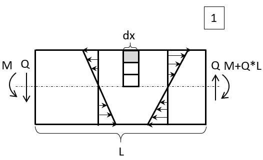

Static |
0 | Find BDM: Links-> BDM-> bdm-6001 -> Search | BDM-TOC-6000 |
1 | Basic Methods (10) |
6010 - Section Properties | 6020 | 6030 - Transformation of Stress | 6035 - Material Yielding and Failure Criteria | 6040 - Stress Concentrations | 6050 - Inelastic Buckling Equations and Solutions | 6060 - Thermal Effects | 6070 - Margin of Safety | 6080 - Fatigue | 6090 - Structural Design Optimization |
2 | Beam Bending (12) |
6110- Beam Bending Moments and Deflections | 6122- Bending Stresses- Straight Beams | 6124- Plastic Bending | 6126- Bending Stresses- Symmetrical Curved Beams | 6127- Bending of Unsymmetrical Curved Beams | 6128- Curved Thin- Walled Beam Sections | 6130- Bending Stiffeness | 6140- Beam Lateral- Torsional Instability | 6142- Generalized Lateral- Torsional Instability of Beams | 6144- Lateral- Torsional Instability of Unrestrained Beams | 6150- Frames and Rings | 6160- Thermal Effects on Bending |
3 | Axial Loads |
6210 - Tension |
_.1 | The stress concentration near the hole must be considered in determining the joint strength. |
_.2 | The stress is considered to be evenly distributed across the plate up to the fastener hole. |
_.3 | The fastener hole causes a high local stress concentration near the hole’s edge |
_.4 | An efficiency factor f is used to compensate for the uneven stress distribution. | f=0.9 (based on experience) |
4 | Shear Loads (5) |
6300 - Shear Beams and Panels | 6310 | 6320 - Intermediate Diagonal Tension Beams | 6340 - Curved Panels | 6370 - Shear Strength of Corrugated And Beaded Panels |
6 | Plates and Shells (9) |
6510 - Plates under Normal Loads | 6520 - Buckling of Flat Plates |
6530 - Effective Skin Width |
_.1 | Determine Stiffener Compressive Stress, Fst = Fcc = 54.4 (see BDM-6220) |
_.2 | Calculate the Effective Width: We = 0.85*(t=0.05)*(Esk/Est)*sqrt(E/Fst) = 0.59 |
_.3 | Determine Total Effective Width: Wt = 0.59 + 0.875 (distance b/w f.) + 0.59 = 2.055 |
6535 - Inter-Rivet Buckling | 6540 - Stability of Flat Stiffened Panels | 6550 - Buckling of Curved Plates and Shells | 6560 - Thermal Effects on Plates and Shells | 6580 - Bending and Buckling of Equivalent Orthotropic Plates | 6590 Stresses in Shells |
8 | Honeycomb Sandwich Structure (9) |
9 | Assemblies (6) |
6810 - Ribs | 6815 - Bulkheads | 6820 - Cutout Reinforcement | 6830 - Fuselage | 6840 - Wing Box | 6845 - Piping and Ducting |
10 | Mechanical Systems (5) |
6852 - Contact Stresses | 6854 - Friction | 6856 - Stresses in Springs | 6868 - Stresses in Shafts | 6870 - Round Tubes |
1 | Ферма: метод узлов |
_.1 | a - единичная нагрузка вверх; b-вправо; c-вниз; d-влево; |
_.2 | x - шарнир с 1 степенью свободы; y-2 степени; z - заделка; |
_.3 | по числу узлов j можно определить число эл-тов, если j=3 |
_.4 | число эл-тов m = 2*j-3 = 2*3-3=3 | insure stabilty |
_.5 | если эл-тов меньше - unstable equilibrium |
_.6 | если эл-тов больше - statically indeterminate |
_.7 | обход нужно начинать с точки где 2 неизвестные реакции |
2 | Ферма: задача 1 |
_.1 | узлы j=3: p1x=[0,0]; p2y=[0,4], p3c=[3,4] |
_.2 | эл-ты m=3: p1p2, p1p3, p2p3 |
_.3 | 1=4 & p1p3=5 => p1p3 = 5/4 = -1.25 |
_.4 | p2p3 = p1p3*3/5 = (5/4)*(3/5) = 0.75 |
_.5 | p1p2 = p1p3*4/5 = (5/4)*(4/5) = 1 |
_.6 | проверка: sqrt(1+0,75^2) = sqrt(1.5625) = 1.25 |
3 | Ферма: задача 2 |
_.1 | узлы j=5: p1x=[0,0]; p2y=[0,4], p3=[3,0], p4=[3,4], p5=[6,4], |
_.2 | эл-ты m=2*5-3=7: p1p2, p1p3, p1p4, p2p4, p3p4, p3p5, p4p5 |
_.3 | из предыдущей задачи: p4p5=0.75, p3p4=1, p3p5=-1.25 |
_.4 | узел p3: h: p1p3=-1.25*(3/5) = -0.75 |
_.5 | p4 | v: p1p4=1*5/4=-1.25 | h: p2p4-(1.25*3/5)=0.75 => p2p4= 1.5 |

4 | Ферма: задача 3 |
_.1 | узлы j=5: p1x=[0,0], p2=[0,2] p3y=[0,4], p4=[1.5,2], p4=[1.5,4], p5=[3,4] |
_.2 | p1 | R=P*x/y =3/4=0.75 | p1p4*3/5=R | p1p4=(5/3)*(3/4)=1.25 |
_.3 | p6 из задачи 1 | p5p6=p1p3=-1.25 |
1 | Устойчивость при осевой нагрузке |
_._ | BDM-6230: Column Flexural Instability - общие сведения |
_.1 | Гибкость стержня (slenderness ratio) = sr=L0/i |
_.2 | L0 = L * mu (коэффициент, зависящий от условий закрепления стержня) |
_._ | mu -> BDM-6232: Column Fixity Coefficients and Effective Lenghts | |
_.3 | i = sqrt(I/A) - радиус инерции (radius of gyration) |
_.4 | long column (>100) - Euler | Pcr = PI^2*E*I/L^2 |
_._ | BDM-6234: Euler/ Euler- Engesser Columns | E -> Et | cutoff at Fcy |
_.5 | middle - Johnson | BDM-6236: Johnson - Euler Column Buckling |
_.6 | short (<12,5) - crippling | BDM-6220 |
_.7 | если сечение меняется по длине | BDM-6238: Newmark Column Buckling Analysis |
2 | BDM-6220 | Compression Crippling |
_.1 | Crippling - inelastic distortion of cross-section of structural element under compression load |
_.2 | There is no analytical basis for the prediction of crippling so empirical techniques developed with coefficeint from test |
_.3 | Fcc=Fcc1*b1*t1+Fcc2*b2*t2/(b1*t1+b2*t2) |
_.4 | B10/(b/(10*gf*t))^m = 0.054/(10*3.4*0.063)^0.8 = 0.054/1.839 = 0.029 |
_._ | gf=1 for 1 free edge |
_.5 | sqrt(Fcy*E) = sqrt(39*10,000) = sqrt(390,000) = 624.5 |
_.6 | Fcc = 0.029(_.4)*624.5(_.5)=18.33ksi |
3 | BDM-6236 | johnson-euler column buckling |
_.1 | эмпирическая ф-ла, позволяет плавно переходит от Fcc к Эйлеру |
_._ | учитывает влиение тонкостенности |
_.2 | f = Fcc - (Fcc^2)*(sr^2)/(4*(PI^2)*E) |
_.3 | Fcc=18 | E=10,000 | sr=1,f=324/394,786=18 | sr=10,f=32,400/394,786=17.9 |
_._ | sr=50,f=810,00/394,786=15.9 | sr=100,f=3,240,000/394,786=9.8 |
_._ | Euler: f=PI^2*E*I/A*L^2 | sr=L/sqrt(I/A) => f=PI^2*E/(sr^2) |
_._ | f=9.9*(10,000/(100*100)) = 9.9 | при sr=100 Johnson = Euler |
4 | BDM-6242 | column flexural-torsional instability | road-map |
_.1 | beams | BDM-6140: beams lateral-torsional instability |
_._ | BDM-6142: restarined beams |
_._ | BDM-6144: un-restarined beams |
_.2 | columns | BDM-6242: column flexural-torsional instability |
_._ | BDM-6230: pure flexural buckling |
_._ | BDM-6250: pure torsional buckling |
_._ | BDM-6244: combined flexural-torsional buckling |
_.3 | beam-columns | BDM-6255: classical beam columns |
_.? | BDM-6240: generalized flexural/ lateral-torsional instability | нет в PSDS |
5 | BDM-6244 | generalized flexural-torsional instability of columns |
_._ | изгибно-крутильная неустойчивость |
_.1 | determine the basic section properties |
_.2 | determine the stiffness properties, kx, ky, and kt, of the stringers |
_.3 | determine the effective lengths of the column |
_.4 | evaluate the coefficients, ao, a1, and a2, of the characteristic equation |
_.5 | calculate the flexural-torsional instability load of the column |
6 | Bending + compression | y''=M/EI |
_._ | Given: w=20lb/in | L=100in | I=10 in^4 | Pcomp=4,420lb | M1=3,315 lb*in | M2=8,640 lb*in |
_._ | Mmax= -55,505(_1)/0.634(_2) + 58,820(_3) = -28,700 lb*in | Mmax=D1/cos(x/j)+w*j^2 |
_.1 | D1=M1-w*j^2=3,315-58,820=-55,505 |
_._1 | w*j^2= 20*2,941 = 58,820 |
_.__1 | j=sqrt(EI/P)= sqrt(1.3*10^6*10/4,420) = sqrt(2,941) = 54.23 |
_.2 | cos(x/j)= cos(0.884) = 0.634 |
_._1 | x/j=arctg(1.219)=0.884 |
_.__1 | tg(x/j)=(D2-D1*cos(L/j))/(D1*sin(L/j)) = 1.219 |
_.___ | (50,180-(-55,505*-0.270))/(-55,505*x0.963) = -65,156/-53,441 = 1.219 |
_.___1 | (L/j) = 100/54.23 = 1.844 | sin(L/j)=0.963 | cos(L/j)=-0.270 |
_.___2 | D2=M2-w*j^2=8,640-58,820=-50,180 |
_.3 | w*j^2=58,820 |
7 | Other |
6250- Column Torsional Instability | 6255- Classical Beam Columns | 6260- Thermal Effects on Axial Stresses | 6270- Compression Strength of Corrugated and Beaded Panels |
1 | Постановка задачи и построение эпюр | 12 |
_.1 | z2-l1-z1 - схема | sigma=fn(M) | tau=fn(Q) | dM=Q*dx | dQ=q*dx | if Q=dM/dx=0 => M=Mmax |
_.2 | 2х опорная балка: R=P/2=90 lb | M=R*L/2=90*35=3,150 in*lb |
2 | Нормальные напряжения | 13 |
_.1 | отложим по оси х ось балки длиной=x, по оси у вниз отложим точку А на расстоянии R | |
_.2 | на расст. z вниз и вверх от оси балки строятся крайние слои ненагруженной балки |
_.3 | проводим через А и край нейтр.оси линию - деформированная балка |
_.4 | tg_th=x/R | tg_th=dx/z => x/R=dx/z => dx/x=z/R=e - относит.удлинение |
_.5 | из Гука sigma=E*e => sigma=E*z/R |
_.6 | integ(sigma*dA*z)=M => M=integ((E*z/R)*dA*z)=integ(E*(z^2*dA)/R) |
_.7 | заменим integ(z^2*dA) на J - по определению |
_.8 | M=E*J/R => 1/R=M/E*J |
3 | Моменты инерции простых фигур |
_.1 | прямоугольник: Ix=b*h^3/12 | Wx=b*h^2/6 |
_.2 | круг: Ix=PI*D^4/64 | Wx=PI*D^3/32 |
_.3 | кольцо: Wx= (PI*D^3/32)*(1-(d/D)^4) |
4 | Вычисление моментов инерции плоских фигур | 14 |
_.1 | статич.момент относительно низа (T-section): S=1*0.1*(1-0.05)+0.9*0.1*0.5=0.095+0.0405=0.1355 in^3 |
_.2 | центр тяжести относительно низа: z=S/A=0.1355/0.19=0.713 |
_.3 | момент инерции отдельно (b*h^3/12): J1=1*0.1^3/12=0.00008 | J2=0.1*0.9^3/12=0.00608 |
_.4 | перенос к центру тяжести: J1_=1*0.1*(0.95-0.713)^2=0.00561 | J2_=0.9*0.1*(0.713-0.45)^2=0.00623 |
_.5 | общий момент инерции: J=(0.00008+0.00561)+(0.00608+0.00623)=0.00569+0.01231=0.01800 |
_.6 | момент сопротивления: W=J/z=0.01800/0.713=0.02524 |
_.7 | нормальные напряжения: sigma=M/W=3,150/0.02524=125k |
_.8 | 1:0.025/125k | 2:0.202/16k |
5 | Касательные напряжения | 15 |
_.1 | Дано: балка шириной=b, длиной L, нагруженная силой Q |
_.2 | из-за длины момент справа будет больше левого на величину Q*L |
_.3 | вырежем участок шириной dx |

_.4 | если моменты на концах балки разные, то и силы будут разные N1+dT=N2 |
_.5 | разница между силами и будет равна касательной силе dT=N2-N1=(sigma2-sigma1)*A |
_.6 | sig2-sig1=(M+Q*dx)*y/I-M*y/I=Q*dx*y/I |
_.7 | dT=(Q*dx*y/I)*A | заменив S=A*y => dT = Q*dx*S/I |
_.8 | dT=tau*b*dx | приравнивая tau*b*dx = Q*dx*S/I |
_.9 | tau = Q*S/(b*I) |
_.10 | 16.Расчет составных балок | 17.Расчет ж/бетон. балок | |
6 | Касательные напряжения для фигур |
_.1 | прямоугольник высотой h, шириной b | tau=Q*S/(I*b) |
_._ | S=A*y = integ(h/2->0)(b*dy*y) = integ(h/2->0)(by^2/2) |
_._ | S=b*(h/2)^2/2=1*(b*h^2)/8 | I=b*h^3/12 | S/I=3/(2*h) |
_._ | tau=Q*(b*h^2/8)/((b*h^3/12)*b) = (12/8)*Q/(b*h)= 1.5*Q/(b*h) |
_.2 | I-section (h,b и толщиной t=0.1*b=0.1*h) | b1=0.1*b | h1=0.8*h |
_._ | middle_S=b/8*((h^2-(0.8*h)^2)+0.1*((0.8*h)^2))=(b*h^2)/8*(0.36+0.064)=0.424*(b*h^2)/8 |
_._ | end_S=b/8*((h^2-(0.8*h)^2)=0.36*(b*h^2)/8 |
_._ | Jchord=A*y^2=b*(h/2-h1/2)*((h/2+h1/2)/2)^2=0.27*(b*h^3/12) |
_._ | Jweb=b1*h1^2/12=0.1*0.8^3=0.0512*(b*h^3/12) | J=
_._ | if t=0.05 => middle_S=0.23 & end_S=0.19 |
1 | Общие сведения | 18 |
_.1 | расчет деформаций необходим для сохранения от расшатывания и уменьшения колебаний |
_.2 | также через деформации считаются статически неопределимые системы |
_.3 | для стальных балок прогиб состовляет от L/1000 - L/250 |
2 | Вывод формулы |
_.1 | отложим часть балки (dx) по оси x, по оси у откладываются деформации (dy) |
_.2 | из тригонометрии: tg(th) = dy/dx или если th мал -> th=dy/dx |
_.3 | деформация dy=th*dx | нужно найти th |

_.4 | из точки деформации проводим перепендикуляр на ось у (радиус R) |
_.5 | получается прямоугольный треугольник в котором нижний угол = th |
_.6 | из тригонометрии: tg(th) = dx/R или если th мал-> th=dx/R |
_.7 | подставляем th=dx/R в dy=th*dx -> dy = dx*dx/R или y''=1/R |
_.8 | заменяя 1/R=M/E*I -> y'' = M/EI |
2 | Графические методы вычисления деформаций | 19 |
_.1 | смысл метода найти y(действ.прогиб) = Mf(фикт.момент))/E*J |
_.2 | вводится фикт.балка с фикт.нагрузкой qf, к-рая меняется по закону действ.момента(M=qf) |
_.3 | qf=dQf/dx=dMf^2/dx^2 | dy^2/dx^2=M/EJ => M=(dy^2/dx^2)*EJ |
_.4 | приравнивая qf=M => dMf^2/dx^2=(dy^2/dx^2)*EJ => Mf=y*EJ | Qf=th*EJ |
_.5 | при этом для фикт.балки необходимо поменять закрепления: |
_.__ | действ.(y=0 & th=0) = заделка => фикт.(M=0 & Q=0) = своб.конец |
_.__ | действ.(y!=0 & th!=0) = своб.конец => фикт.(M!=0 & Q!=0) = заделка |
_.__ | действ.(y=0 & th!=0) = концев.шарнир => фикт.(M=0 & Q!=0) = концев.шарнир |
_.6 | консоль: для фикт.балки заделка и своб.конец меняются местами |
_._ | эпюра действ.моментов = фикт.погонной нагруке qf |
_._ | поперечная сила от qf: Qf= (P*L)*L*(1/2)(площадь эпюры)= |
_._ | момент от qf: Mf= Qf*2*L/3(расст.до центра тяжести)= P*L^3/3 |
_.7 | 2х-опорная балка с силой P: концев.шарниры остаются |
_._ | реакция в опоре (площадь половины эпюры): Qf= (P*L/4)*L/2*(1/2)=P*L^3/16 |
_._ | момент от qf: Mf= Qf*(L/2-L/6)(расст.до центра тяжести треугольника)= P*L^3/48 |
_.__ | (L/2-L/6)=(L/6)*(3-1)=L/3 - 1/3 момент растет, 1/3-не меняется, 1/3-убывает |
_.2 | 20.Балки перменного сечения |
3 | Потенциальная энергия | 21 |
_.1 | Состав главы: 124.Постановка вопроса | 125.Вычисление потенциальной энергии |
_._ | 126.Теорема Кастильяно | 127.Примеры приложения теоремы Кастильяно |
_._ | 128.Прием введения добавочной силы | 129.Теорема о взаимности работ |
_._ | 130.Теорема Максвелла-Мора | 131.Способ Верещагина |
_._ | 132.Прогибы балок от действия поперечной силы | 133.Примеры |
_.2 | Работа растяжения- сжатия | A=0.5*P*dx |
_._ | sigma=E*(dx/x) => P/A=E(dx/x) => dx=P*x/(E*A) |
_._ | 1точка: A=P*dx | 2т: A=(P/2)*(dx/2)+P*(dx/2)=0.75*P*dx |
_._ | 4т: A=(P/4)*(dx/4)+(2P/4)*(dx/4)+(3P/4)*(dx/4)+(4P/4)*(dx/4)=(1+2+3+4)*P*dx/16=0.625*P*dx |
_.3 | Энергия изгиба | A=0.5*M*th | th=L*(1/R) | M/EJ=1/R => th=M*L/(EJ) |
_._ | A=0.5*M*(M*L/(EJ))=> | A=M^2*L/(2*E*J) |
4 | Приближенное ур-ние изогнутой оси балки | 22 |
_.1 | |
5 | Статически неопределимые балки | 23 |
_.1 | схема: z5c10_5x - 1 раз статически неопределимая |
_.2 | момент в заделке должен повернуть 2х-опорную балку так, что th=0 |
_.3 | угол поворота от силы P в 2х-опорной балке = (1/16)*(P*L^2)/(E*J) |
_.4 | возвращ. момент = (1/3)*M*L/(E*J) |
_.5 | приравнивая (1/16)*(P*L^2)/(E*J)=(1/3)*M*L/(E*J) => (1/16)*(P*L)=(1/3)*M |
_.6 | M=(3/16)*P*L | sum M=0: -(3/16)*P*L+R0*L-P*L/2=0 -> R0=(3/16)*P+P/2 -> R0=(11/16)*P |
_.7 | RL=P-(11/16)*P=(5/16)*P |
_.8 | 24.Расчет стат.неопред. балок по допускаемым нагрузкам | 25.Балка на упругом основании |
_._ | 26.Косой изгиб | 27.Совместное действие изгиба и растяжения/ сжатия |
_._ | 28.Совместное действие изгиба и кручения | 29.Общий случай сложного сопротивления |
_._ | 30.Расчет тонкостенных стержней на изгиб и кручение | 31.Кривые стержни |
_._ | 32.Расчет толсто и тонкостенных сосудов |
6 | консоль | z10c10 - zadelka-(L=10)-(P=-10) |
_.1 | E*J*y''= -P*(L-x) |
_.2 | E*J*y'= theta= -P*(L*x-x^2/2)+С1 |
_.__ | x=0 -> y'=0: 0=-0-0+C1 => C1=0 |
_.__ | x=L -> -P*L^2*(1-1/2) -> 1/2 -> y'=-(1/2)*(P*L^2)/(E*J) |
_.__ | th_max=-(1/2)*(P*L^2)/(E*J) |
_.3 | E*J*y = -P*(L*x^2/2-x^3/6)+C1*x+C2 |
_.__ | x=0; y=0: 0=-0-0+0+C2 => C2=0 |
_.__ | x=L: -P*L^3*(1/2-1/6) -> (3/6-1/6) -> 2/6 -> 1/3 -> y=(1/3)*(P*L^3)/(E*J) |
_.__ | y_max=(1/3)*(P*L^3)/(E*J) |
7 | консоль | z5c10_5 |
_.1 | 1: E*J*y''= -P*(L/2-x) | 2: E*J*y''= 0 |
_.2 | 1: E*J*y'= -P*(L/2*x-x^2/2)+C1 | 2: E*J*y'= C2 |
_.__ | 1: х=0 -> y'=0: 0=0-0+C1 => C1=0 |
_.__ | 1: x=L/2: С1+P*(L/2)^2*(1/2)=C2 => C2=0+P*L^2/8=> C2=P*L^2/8 |
_.__ | th_max=C2=(1/8)*(P*L^2)/(E*J) |
_.3 | 1: E*J*y= -P*(L*x^2/2-x^3/6)+C1*x+C3 | 2: E*J*y'= C2*x+C4 |
_.__ | 1: х=0 -> y=0: 0=0-0+0+C3 => C3=0 |
_.__ | 1: x=L/2: -P*(L*(L/2)^2/2+(L/2)^3/6)=(P*L^2/8)*(L/2)+C4 = .. |
_.___ | (L^3/8)-(L^3/48)=(L^3/16)+C4 => C4=P*L^3*(1/8-1/48-1/16)=(1/24)*(P*L^3) |
_.__ | 2: x=L: y=P*L^2/8*L+(1/24)*(P*L^3) -> y=P*L^3*(1/8+1/24) |
_.__ |]y_max=(1/6)*(P*L^3)/(E*J) |
8 | 2х-опорная балка | y5c10_5x |
_.1 | 1: E*J*y''= -(P*x/2) | 2: E*J*y''= -(P*x/2)+P*(x-L/2) |
_.2 | 1: E*J*y'= -(P*x^2/4)+C1 | 2: E*J*y'= -(P*x^2/4)+P*(x-L/2)^2/2+C2 |
_.__ | 1: х=L/2 -> -(P*L^2/8)+C1=-(P*L^2/8)+P*(L/2-L/2)^2/2+C2 => C1=C2 |
_.__ | th_max=C1=(1/16)*(P*L^2)/(E*J) |
_.3 | 1: E*J*y= -(P*x^3/12)+C1*x+C3 | 2: E*J*y= -(P*x^3/12)+P*(x-L/2)^3/6+C1*x+C4 |
_.__ | 1: х=0 -> y=0: 0=0+0+C3 -> C3=0 |
_.__ | 1: х=L/2 -> -(P*L^3/96)+C1*(L/2)=-(P*L^3/96)+0+C1*(L/2)+C4 -> C4=0 |
_.__ | 2: х=L -> y=0: 0=-(P*L^3/12)+P*L^3/48+C1*L -> C1=P*L^2*(1/12-1/48) -> C1=(1/16)*(P*L^2) |
_.__ | 1: х=L/2 -> y=-(P*L^3/96)+(1/16)*(P*L^2)*(L/2)=(-1/96+1/32)*(P*L^3)=.. |
_.__ | y_max=(1/48)*(P*L^3)/(E*J) |
9 | 2х-опорная балка | m1y10x |
_.1 | 1: E*J*y''= -M+(M/L)*x |
_.2 | 1: E*J*y'= -M*x+(M/L)*x^2/2+C1 |
_.__ | th_max=C1=(1/3)*M*L/(E*J) |
_.3 | 1: E*J*y= -M*x^2/2+(M/L)*x^3/6+C1*x+C2 |
_.__ | 1: х=0 -> y=0: 0=0+0+C2 -> C2=0 |
_.__ | 1: х=L -> y=0: 0=-M*L^2/2+M*L^2/6+C1*L -> C1=ML/2-ML/6 = (1/3)*ML |
_.__ | 1: х=L/2 -> y=M*L^2*(-1/8+1/48+1/6)=(-6+1+8)/48=1/16 |
_.__ | y_max=C1=(1/16)*M*L^2/(E*J) |
1 | Формулы сложного сопротивления с точки зрения различных теорий прочности | mow |
_.1 | Введение |
_.2 | Старые теории о прочности | 3 гипотезы: max norm stress, max strain, max dif s1-s3 |
_.3 | Новые опыты |
_._ | строится точка для каждого предельного состояния, осн.проблема в создании такого давления |
_.4 | Работы А.Феппля | сжатие по 1 оси без трения ~= сжатию по 2 осям |
_.5 | Опыты В.Фойхта | сжатию по 2 осям + растяжение по 3 |
_.6 | Работы Дж.Геста | сталь: растяжение, чистые сдвиг (кручение трубки), 3х-осное | s2 не влияет |
_.7 | Теории Ш.Дюге и О.Мора | tau+0.176*s=const |
_.8 | Формулы сложного сопротивления |
_.9 | Формулы сложного сопротивления для чугуна |
2 | Главные напряжения |
_.1 | Площадки, где нет касательных напряжений называют главными |
_.2 | в любой точки тела можно построить 3 плащадки с главными напряжениями |
_.3 | линейное состояние - 1 главное напряжение не равно 0 (растянутая полоска) |
_.4 | плоское состояние - 2 главных напряжения не равны 0 (цилиндр под давлением) |
_.5 | объемное состояние - 3 главных напряжения не равны 0 (колеса и рельсы) |
3 | линейное напряженное состояние |
_.1 | Дано: полоска площадью А=1 in^2 и нагруженная силой P1=1 lbs | sigma1=P1/A=1 psi |
_.2 | Разрезаем ее под углом alpha = 30deg | cos(30)=sqrt(3)/2 |
_.3 | Нормальная сила равна N1=P1*cos(alpha)=0.866 |
_._ | площадь разреза увеличивается An=A/cos(alpha) = 1.155 |
_._ | напряжение sigmaN1 = N1/An= P1*cos(alpha)/(A/cos(alpha))=sigma1*cos(alpha)^2=0.750 |
_._ | sigmaN max = 1 |
_.4 | Касательная сила равна T1=P1*sin(alpha)=0.500 |
_._ | напряжение sigmaT1 = T1/An= P1*sin(alpha)/(A/cos(alpha))=sigma1*sin(alpha)*cos(alpha)=0.433 |
_._ | sigmaT: 30:0.433 | 45:0.5 | 60:0.433 |
_._ | sigmaT max = 0.5 |
4 | плоское напряженное состояние |
_.1 | вырежем треугольник гипот: площ=A; N перпендикулярна; cos(alpha)=x/n |
_.2 | вдоль N: N-Px*cos-Py*sin-Tx*cos-Ty*sin=0 |
_._ | Px=x*A*cos | Py=y*A*sin | Tx=t*A*sin | Ty=t*A*cos |
_._ | stress, A=1: n-x*cos2-y*sin2-t*sin*cos-t*sin*cos=0 |
_._ | n=x*cos2+y*sin2+2*t*sin*cos |
_.3 | вдоль T: T+Px*sin-Py*cos-Tx*cos-Ty*sin=0 |
_._ | tau=x*sin*cos-y*sin*cos+t*cos2-t*sin2 |
_._ | tau=(x-y)*sin*cos+t*(cos2-sin2) |
_.4 | если площадки главные (t=0) | n=x*cos2+y*sin2 | tau=(x-y)*sin*cos |
_.5 | x=1 | y=2 | t=1 | s1/s2=(x+y)/2+/-sqrt[((x-y)/2)^2+t^2]=2.62/0.38 |
_._ | alpha=30 deg | tmax=(2.62-0.38)=1.15 | sn=0.38+1.15+1.15*cos30=2.12 |
5 | Модуль сдвига G | timoshenko |
_.1 | E=sigma/e аналогично G=tau/gamma (угол пооврота) |
_.2 | в осях x-y строится треугольник с 2ми сторонами = R (углы 45 град) |
_.3 | если по y-сжитие, по х-расстяжение и они равны, то в гипотенузе - чистый сдвиг (круг Мора) |
_.4 | при деформации по х происходит удлинение x2=R*(1+ex), по у - y2=R*(1-ey) |
_.5 | tg_gamma/2= y2/x2=R*(1-ey)/(R*(1+ex))=(1-ey)/(1+ex) |
_._ | из тригонометрии: tg_gamma=tg(45-d_gamma/2)/2=(tg45-tg(d_gamma/2))/(1+tg45*tg(d_gamma/2))=.. |
_._ | =(1-tg(d_gamma/2))/(1+tg(d_gamma/2)) = (1-d_gamma/2)/(1+d_gamma/2) |
_.6 | (1-ey)/(1+ex) = (1-d_gamma/2)/(1+d_gamma/2) => ex=ey=d_gamma/2 |
_.7 | ex=sigma_x/E+mu*sigma_y/E - сжатие по y увеличивает х |
_.8 | ey=sigma_y/E+mu*sigma_x/E - растяжение по х сжимает y |
_.9 | при чистом сдвиге tau=sigma_x=sigma_y |
_.10 | ex=tau*(1+mu)/E | ey=tau*(1+mu)/E |
_.11 | d_gamma/2=tau*(1+mu)/E => tau/d_gamma = E/2*(1+mu) => G=E/2.6 |
1 | BDM 6310 - Flat Shear Resistant Beams |
_.1 | Given | L=10 in | h=5 in | t=0.063" |
_.2 | MS=1/(sqrt((fbend/Fbend_buckle)^2+(1.3fs/Fshear_buckle)^2)) |
_.3 | fbend=Mavg*h/(2*I) | Mavg=(M_left+M_right)/2 |
_._ | I = 2*Ach*(h/2)^2 + 2*Ich + t*h^3/12 |
_.4 | fs=V/(h*t) |
2 | Fbend_buckle=21.5*Ca*Er*(t/h)^2 |
_.1 | Ca=fn(h/c; L/h) | (2;0.2)=2.5 | (2;0.4)=1.22 | (2;0.6)=1 | (2;1)=1 |
_._ | h/c=2 - нейтральная ось посередине | L/h=1 - стенка квадратная |
_.2 | Er=0.5*Es[1+sqrt(0.25+0.75(Et/Es)] |
_.3 | f=40ksi | Er=0.5*9,998*[1+sqrt(0.25+0.75)(9,922/9,998]=9,984ksi |
_._ | 40:9,984 | 45:8,034 | 46:6,939 | 47:5,422 | 48:3,479 | 50:0,772 |
_.4 | Fbend_buckle = 21.5*1*9.984*(0.063/5)^2 = 34.08 ksi |
3 | Fshear_buckle=Kss*Krest*Gs*(t/b)^2 |
_.1 | if L>h: a=L, b=h; else a=h; b=L |
_.2 | Kss=fn(b/a) | 0:12.8 | 0.2:13 | 0.4:14.2 | 0.5:15 |0.6:16 | 0.8:18.6 | 1:21.8 |
_._ | коэффициент учитывающий отношение сторон прямоугольника |
_.3 | Krest=Rst+0.5*(Rch-Rst)*(b/a) | если tweb = t stif = tchord => 1 |
_._ | коэффициент защемления | учитывает влияние схемы и разность толщин |
_._ | stiffener #1 and chord #3 & #4 | Rst, Rch=fn(t_st/t, t_ch/t) | 1:1 | 2:1.5 | 3:1.6 |
_._ | stiffener #2 (from 1 side of web) | 1:0.7 | 2:1.24 | 3:1.3 |
_._ | Assume t_st=t_ch=t=0.063 for scheme 1,3 | Rst=Rch=1 | Krest=1+0.5(1-1)*(5/10)=1 |
_.4 | Gs - secant shear modules | Assume Gs=G=3,800 ksi |
_.5 | Fshear_buckle = 15*1*3,800*(0.063/5)^2 = 9.05 ksi |
4 | Web ultimate shear stress |
_.1 | web max shear stress | MS=(Fsu/fs_max)-1 | fs_max=V*Q/(I*t) |
_.2 | web-to-stiffener attachment | MS=(Fsu/fs_net)-1 | fs_net= (s_avg/(s_avg-d))*(t/tp)*fs |
_.2a | s_avg - average web-to-stiffener fastener spacing |
_.2b | tp - web thickness in local pad-up area at the attachment |
_.3 | web-to-chord attachment | MS=1/(sqrt((fbend/Ftu)^2+(fs_net/Fsu)^2))-1 |
5 | Chord & Stiffeners |
_.1 | t_ch > 1.2*t_web | f_ch=M/Ach*h |
_.2 | Ist/(h*t^3)*(Est/Eweb)=fn(l/h) | 0.15:4.5 | 0.2:2.75 | 0.4:1 | 0.6:0.6 | 0.8:0.45 | 1.2:0.4 |
_._ | single: 0.85*fs*A_st/l | double: 0.60*fs*A_st/l |
5 | Tapered shear beams |
_.1 | Given | h1=6 in | M | V |
_.2 | tg(alpha)= delta_h/L= (h1-h)/2/L= (6-5)/2/10=0.5/10=0.05 |
_.3 | cos(alpha)= L/sqrt(L^2+delta_h^2)= 10/sqrt(100+0.25) |
_.4 | x=0 | P_hor=M/h | P_vert=M/h*tg(alpha) | P_ch=P_hor/cos(alpha) |
_.5 | x=l | P_hor=(M+V*L)/h1 | P_vert=(M/L+V)*(1-h/h1) | P_ch=(M+V*L)/(h1*cos(alpha)) |
1 | Given | pure tension |
idt |
_.1 | L=10 in | h=5 in | t=0.063" |
_.2 | MS web: shear buckling, ult shear, max shear, net area, combined stiff-chord |
_.3 | MS stiff: crippling, column |
_.4 | MS chord: at stiff, |
_.5 | Attach: MS web-chord | MS web-stiff | MS stiff-chord |
2 | MS web shear buckling |
_.1 | Fscr from bdm-6310 |
3 | MS stiffener crippling |
_.1 | allowable: Fc=0.00058*E*(Fcy^0.4)*(k_^0.67)*(tst/t)^0.33 |
_.2 | k_ - diagonal tension factor | 0:shear resist | 0..1:IDT | 1:pure diagonal |
_._ | k_=tanh(0.5*(log(fs/Fscr)) | 1:0 | 10:4.6 | 30:0.63 |
1 | Torsion | 61 |
1 | 6610 - Joints and Splices |
_.1 | intro | primary design for fatigue |
_.2 | mechanically fastened joints |
_._ | splices | skin | stringer | frame | wing surface | bulkhead splices |
_._ | joints | wing-body | empennage-body | floor beam |
_.3 | joint tension and shear effeciency |
_._ | p.30 | nu = 0.9(1-Ae/Ag) |
_.4 | miscellaneous graphs |
_._ | (tskin=0.1) => (3/16, 100 countersink) => (tc/t=0.48) |
_.5 | eccentric load on fastener group |
_._ | bolt group/ tension bearing |
_.6 | load transfer in joint |
6615 - Fastener Strength | 6620 - Angle and Channel Clip and T-Fittings | 6630 - Lug Static Strength Estimation | 6640 - Strength of Single-Pin Joints | 6650 - Bathtub Type Tension Fittngs |
1 | Large Cutouts |
_.1 | loads due to body pressure |
_.2 | loads due to flight condition |
_.3 | example criteria for large door |
_.4 | effects of major cutout |
2 | Medium Cutouts |
_.1 | example of non-load-carrying door |
_.2 | example of beam web cutout |
_.3 | equally spaced cutouts |
_.4 | cutout in torque box |
3 | Small Cutouts |
_.1 | small unreinforced holes |
_.2 | flenged holes |
_.3 | reinforced holes |
1 | Intro | Frame Analysis Margin of Safety Summary | Links-> Xterm-> User Guide BDC-> Famoss |
2 | Overview |
_.1 | flowchart: $famoss-> load library x.fa-> save-> exit |
_.2 | input | View Input - not functional (3) | Create or Edit Input (4) | Std Properties & Allowable (5) |
_.3 | execution | General Internal Loads (6) | Ultimate MS (7) | Fatigue (8) | Load Plotting (9) |
_.4 | output (10) | Frame by Stringer Summary | Frame | Detail | Shear Tie | Frame Splice | Frame Joint |
4 | Create or Edit Input | Fuselage/ Frame/ IC/ Web/ OC/ Tear Strap/ Skin/ Stringer/ Shear Tie/ Fastener |
5 | Standart Properties and Allowables (p.65) | Material/ Stringer Clip/ Fastener |
6 | Generate Internal Loads (p.75) | Process/ FEADMS Interface/ Input Internal Loads/ Effective Width/ Plot MDS Loads |
7 | Compute Static Margins of Safety (p.105) |
8 | Fatigue Analysis (p.111) |
9 | Plotting Internal Loads (p.117) |
10 | Output Files (p.123) |
B | Flow Charts |
_.1 | Analysis Data Flow |
_.2 | Mid-Bay Internal Loads Flow |
_.3 | FAMOSS Analysis Flow (Non-787) |
_._ | Web Shear Resistance - BDM-6310, 6520 |
_._ | Web IDT - BDM6320 (if not 0.2 < web ratio < 1 | h/t > 1 | stiff.ratio > 0.25) |
_._ | IC tension - 0.9*Ftu/f | IC comp - BDM-6236, Beam Column Check |
_._ | Skin - BDM-6535 |
_.4 | FAMOSS Analysis Flow (787) |
C | FAMOSS Frame Analysis, Methods and Allowables |
F | Frame Idealization Types |
G | SA Viewer Interface | F-A- formed angle |
H | Geocodes (p.327) | R1C1A: t=0.125"/ ht=1.1/ w_in=1.2/ lip_ht=0.5/ rad=0.28 |
I | Frame IC Stability Equations (p.371) |